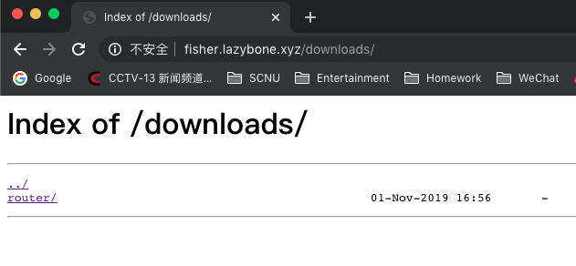

使用Nginx搭建下载服务器
下载服务器主要用于存放自己日常使用的安装包和文件
1. 创建文件存放根目录
使用ssh登录服务器，创建文件夹。在这里我使用的是自己的用户和自己用户的根目录，方便文件的管理
1 | cd ~ |
2. 修改Nginx配置文件
修改Nginx配置文件，将文件夹添加为下载根目录
1 | sudo vim /etc/nginx/nginx.conf |
在Http Server添加一个location代码块
1 | location /downloads/ { |
3. 重载Nginx
重新加载Nginx配置文件，使配置生效
1 | service nginx reload |
这时候用浏览器访问http://hostname/downloads/，出现以下页面，配置成功！

4. 存在的问题
在使用默认的配置下，使用curl或wget下载到1m之后就会丢失连接，使用迅雷下载途中会中断多次，在查找并使用了网上的解决方案之后仍然不能解决问题。个人认为是默认缓冲为1m的原因，具体的解决方法待我研究研究。在此先挖一个坑。
5. root和alias的区别
最开始配置location代码块的中的根目录时候，我使用的是root，重载Nginx之后发现404。接着我换成了alias之后就可以了。仔细查了一下文档，这两个参数的区别在于：两者解析URL的方式不同
首先location代码块如下：
1 | location /folder/ { |
alias：使用alias中的路径替换掉URL的参数路径，例如：www.domain.com/folder/会返回服务器上的/home/fisher/downloads/中的文件，使用该方式最后面必须以/结束，否则会找不到文件root：将URL参数路径中的路径追加到root后面，例如：www.domain.com/folder/会返回服务器上的/home/fisher/downloads/folder/，因此出现了404的问题